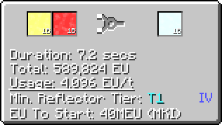
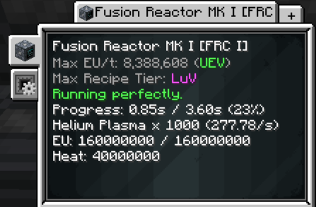
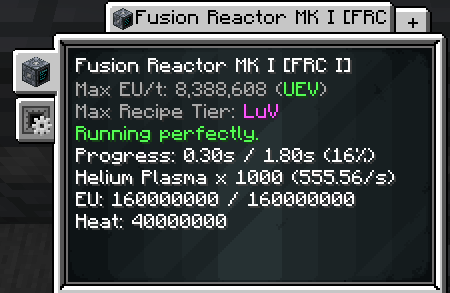

Overclocking (OC)¶
Guide by: driftbluestone & ME Item Storage Cell
Overclocking is an umbrella term for feeding more energy into a machine to make it run faster. There are many types of overclock, each with different properties.
Recipe Speed¶
(Regular) Overclock (OC)¶
When a recipe is run at a Speed Tier higher than its base voltage tier, it will be faster. For every tier above the base, the recipe will run 2x faster. As you are using power of a higher voltage tier, the total energy consumption is multiplied by 2 (4x EU/t, but only half the time taken)
Example: EBF


As seen here, running this
Perfect Overclock (POC)¶
Some machines have POC, instead of Regular OC. This means that, for every tier above the base, a recipe will run 4x faster while using 4x the energy like normal. It should be noted that POC is an inherent attribute of a multiblock. You cannot force a multiblock to POC, or take away its POC. the only exception to this is POC where heat is involved.
Example: Chem Plant


As the Chem Plant is capable of POC, the recipe time is divide by 4 when going from
Fusion Overclock (FOC)¶
Fusion reactors behave differently when overclocking, having a number of quirks.
- Its speed tier doesn't affect its recipe speed, the recipe tier does.
- It's recipe tier isn't affected by energy hatches (number or tier)
- Every time a recipe is overclocked, it is twice as fast, but uses 2x energy instead of 4x energy
Fusion Reactor Tier¶
Every tier of fusion reactor has a base recipe tier, listed below.
- MKI:
LuV - MKII:
ZPM - MKIII:
UV - AUXI:
UHV - MKIV:
UEV - AUXII:
UIV
Therefore running fusion recipes in higher tiered reactors will give 2x speed while using 2x energy (per tier above base recipe tier).
Example: Helium Plasma

The base recipe is at
When ran on the MKI, which has a base recipe tier of

We see it runs twice as fast (7.2s --> 3.6s), while using twice the energy
Fusion Reflector Tier¶
However, you do not need to progress just to fuse elements faster. Upgrading the reflectors inside a fusion reactor can also give you a speed boost.
Each fusion recipe has base reflector tier. When using higher tier reflectors, for every tier above the base, you will gain an additional overclock alongside overclocks from the fusion reactor tier.
Example: Helium Plasma Cont
When changing out the T1 reflectors on the MK1 and using T2 reflectors instead, we get the following results

Now, since we are using a reflector tier 1 higher than the base requirement, the recipe is a further 2x faster, and uses 2x more energy, making it the same as a full POC
A final thing to note is that, while not determining recipe speed, a fusion reactor's speed tier is still important. A fusion reactor must have enough energy to properly use all available overclocks. While you usually do not have a case where you speed tier is lower than your recipe tier, when accounting for the extra overclocks from reflectors, you may need to increase the number of hatches on your fusion reactor to make it as fast as possible.
Subtick Parallels¶
As you progress through the pack, older recipes will continue to get faster and faster. But what happens when it reaches 1 tick? Minecraft does not compute between ticks, and because of that, a machine will no longer speed up if overclocking a recipe means running it faster than 1 tick.
And thats where Subtick Parallels come in to play. If a machine has the capacity to subtick, and reaches the point where overclocking a recipe means sub-tick speeds, the machine will instead parallel to simulate the effect of overclocking.
Example: Industrial Barrel


As we can see, the recipe for Sea Water in the Industrial Barrel caps at 0.05 seconds (1 tick) when run at


Notice that the barrel is running 2 parallels. If the recipe were to have overclocked, then it would be running every 0.025 seconds, or every half a tick. Multiplying that by 2 gives us the current result, 2 recipes every tick. The barrel has begun to parallel to simulate the effect of overclocking.
Machine Capability¶

Recipe Tier Overclock¶
Most multiblocks have the ability to accept 2 energy hatches. If these 2 hatches (of the same tier) provide a sufficient amount of amps (4), the multiblock will have the ability to run recipes of a higher recipe tier. A multiblock can only overclock its recipe tier once.
Speed Tier Overclock¶
Energy hatches can supply a varying amount of amperes to a machine. Multiamp Hatches can provide up to 16a amps, and Dreamlink Hatches can provide up to 256a. When a multiblock is provided with more than 1 amp, it will try to transform them into an amp of the next tier, and will keep doing this until it cannot. This is speed tier overclocking, and it directly affects how fast a multiblock will run recipes.
Speed tier overclocking will not affect a machines recipe tier, unless it has two energy hatches of the same tier. The second hatch does not strictly need to be powered, unless they are being shared.